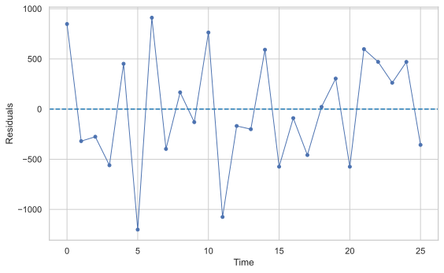
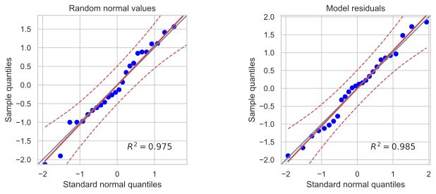

After this lecture, you should be competent (again) in assessing violations of various assumptions of linear regression models, particularly assumptions about model residuals, by being able to apply visual assessments and formal statistical tests, and interpret the results and effects of the violations.
Objectives
Recall the form and standard assumptions of linear regression models.
Recall and apply standard methods of assessing and testing homogeneity of variance and normality of residuals.
Define and test independence (most often, uncorrelatedness) of regression model residuals.
1.1 Diagnostics for the simple linear regression: residual analysis
Given a simple linear regression (SLR) model \[
Y_{t} = \beta_{0} + \beta_{1} X_{t} + \epsilon_{t},
\] where \(Y_{t}\) is the dependent variable and \(X_{t}\) is the regressor (independent, predictor) variable, \(t = 1,\dots,n\), and \(n\) is the sample size.
The Gauss–Markov theorem
If \(\epsilon_{t}\) are uncorrelated random variables with common variance, then of all possible estimators \(\beta^{\ast}_{0}\) and \(\beta^{\ast}_{1}\) that are linear functions of \(Y_{t}\), the least squares estimators have the smallest variance.
Thus, the ordinary least squares (OLS) assumptions are:
the residuals \(\epsilon_{t}\) have common variance (\(\epsilon_{t}\) are homoskedastic);
the residuals \(\epsilon_{t}\) are uncorrelated;
to provide prediction intervals (PIs), confidence intervals (CIs), and to test hypotheses about the parameters in our model, we also need to assume that
the residuals \(\epsilon_{t}\) are normally distributed (\(\epsilon_{t} \sim N (0, \sigma^{ 2} )\)).
Note
If the residuals are independent and identically distributed and normal (\(\epsilon_{t} \sim\) i.i.d. \(N(0, \sigma^{2}\))), then all three above properties are automatically satisfied. In this case, \(\epsilon_{t}\) are not only uncorrelated but are independent. To be independent is a much stronger property than to be uncorrelated.
Note
While a given model may still have useful predictive value even when the OLS assumptions are violated, the confidence intervals, prediction intervals, and \(p\)-values associated with the \(t\)-statistics will generally be incorrect when the OLS assumptions do not hold.
A basic technique for investigating the aptness of a regression model is based on analyzing the residuals \(\epsilon_{t}\). In a residual analysis, we attempt to assess the validity of the OLS assumptions by examining the estimated residuals \(\hat{\epsilon}_{1}, \dots, \hat{\epsilon}_{n}\) to see if they satisfy the imposed conditions. If the model is apt, the observed residuals should reflect the assumptions listed above.
We perform our diagnostics analysis from a step-by-step verification of each assumption. We start with visual diagnostics, then proceed with formal tests. A lot of useful diagnostic information may be obtained from a residual plot.
1.1.1 Homoskedasticity
We plot the residuals \(\hat{\epsilon}_{t}\) vs. time, fitted values \(\hat{Y}_{t}\), and predictor values \(X_t\). If the assumption of constant variance is satisfied, \(\hat{\epsilon}_{t}\) fluctuate around the zero mean with more or less constant amplitude and this amplitude does not change with time, fitted values \(\hat{Y}_{t}\), and predictor values \(X_t\).
If the (linear) model is not appropriate, the mean of the residuals may be non-constant, i.e., not always 0. Figure 1.1 shows an example of a random pattern that we would like the residuals to have (no systematic patterns).
Code
n, m, s =26, 0.0, 522.0x = np.random.normal(loc = m, scale = s, size = n)fig, ax = plt.subplots(figsize = (8, 5))ax.plot(x, marker ='o', markersize =4, linewidth =1)ax.axhline(0, linestyle ='--', color ='tab:blue')ax.set_xlabel('Time')ax.set_ylabel('Residuals')plt.tight_layout()plt.show()

Figure 1.1: A time series plot of ‘ideal’ residuals. These residuals \(x_t\) are simulated i.i.d. normal.
What can we notice in a residual plot?
Change of variability with time indicates heterogeneity of variance of the residuals.
Obvious lack of symmetry (around 0) in the plot suggests a lack of normality or presence of outliers.
Systematic trends in the residuals suggest correlations between the residuals or inadequateness of the proposed model.
Sometimes it is possible to transform the dependent or independent variables to remedy these problems, i.e., to get rid of the correlated residuals or to stabilize the variance (see ?sec-wls and ?sec-gls). Otherwise, we need to change (re-specify) the model.
A useful technique that can guide us in this process is to plot \(\hat{\epsilon}_{t}\) vs. \(\hat{Y}_{t}\) and \(\hat{\epsilon}_{t}\) vs. each predictor \(X_t\). Similarly to their time series plot, \(\hat{\epsilon}_{t}\) should fluctuate around the zero mean with more or less constant amplitude.
NoteExample: Dishwasher shipments model and patterns in residuals
Figure 1.2 shows the Python code and residuals of a simple linear regression exploring dishwasher shipments (DISH) and private residential investments (RES) for several years.
D = pd.read_csv("data/dish.txt", sep ="\t")if"YEAR"in D.columns: D = D.rename(columns = {"YEAR": "Year"})mod1 = smf.ols("DISH ~ RES", data = D).fit()resid1 = mod1.residfitted1 = mod1.fittedvaluesfig, axes = plt.subplots(1, 3, figsize = (12, 3))# Residuals vs timeaxes[0].plot(D["Year"], resid1, marker ='o', markersize =4, linewidth =1)axes[0].axhline(0, linestyle ='--', color ='tab:blue')axes[0].set_xlabel('Year')axes[0].set_ylabel('Residuals')axes[0].set_title('A')# Residuals vs fittedaxes[1].scatter(fitted1, resid1, s =20)axes[1].axhline(0, linestyle ='--', color ='tab:blue')axes[1].set_xlabel('Fitted values')axes[1].set_ylabel('Residuals')axes[1].set_title('B')# Residuals vs predictoraxes[2].scatter(D["RES"], resid1, s =20)axes[2].axhline(0, linestyle ='--', color ='tab:blue')axes[2].set_xlabel('Residential investments (RES)')axes[2].set_ylabel('Residuals')axes[2].set_title('C')plt.tight_layout()plt.show()
Figure 1.2: Estimated residuals plotted vs. time, fitted values, and predictor.
In Figure 1.2, we see a pattern of residuals increasing in time, and a pattern of lower variability for high fitted values or high residential investments. Thus, the assumption of homoskedasticity is violated. In Figure 1.1, no such patterns are observed.
1.1.2 Uncorrelatedness
It is a deep topic that we shall discuss many times in different variations in the future. When observations are obtained in a time sequence (the topic of time series analysis and our course), there is a high possibility that the errors \(\epsilon_{t}\) are correlated. For instance, if the residual is positive (or negative) for a given day \(t\), it is likely that the residual for the following day \(t+1\) is also positive (or negative). Such residuals are said to be autocorrelated (i.e., serially correlated). Autocorrelation of many environmental time series is positive.
When the residuals \(\epsilon_{t}\) are related over time, a model for the residuals frequently employed is the first-order autoregressive model, i.e., the AR(1) model.
The autoregressive model of the first order, AR(1), is defined as \[
\epsilon_{t} = \rho \epsilon_{t - 1} + u_{t},
\] where \(\rho\) is the autoregression coefficient (\(- 1 < \rho < 1\)) and \(u_{t}\) is an uncorrelated \(N (0, \sigma^{2})\) time series.
The model assumes that the residual \(\epsilon_{t}\) at the time \(t\) contains a component resulting from the residual \(\epsilon_{t - 1}\) at the time \(t - 1\) and a random disturbance \(u_{t}\) that is independent of the earlier periods.
Effects of autocorrelation
If the OLS method is employed for the parameter estimation and the residuals \(\epsilon_{t}\) are autocorrelated of the first order, then the consequences are:
The OLS estimators will still be unbiased, but they no longer have the minimum variance property (see the Gauss–Markov theorem); they tend to be relatively inefficient.
The residual mean square error (MSE) can seriously underestimate the true variance of the error terms in the model.
Standard procedures for CI, PI, and tests using the \(F\) and Student’s \(t\) distributions are no longer strictly applicable.
For example, see Section 5.2 in Chatterjee and Simonoff (2013) for more details.
Durbin–Watson test
A widely used test for examining whether the residuals in a regression model are correlated is the Durbin–Watson test. This test is based on the AR(1) model for \(\epsilon_{t}\). The one-tail test alternatives are \[
\begin{align}
H_{0}{:} ~ \rho = 0 & ~~ vs. ~~ H_{1}{:} ~ \rho > 0,\\
H_{0}{:} ~ \rho = 0 & ~~ vs. ~~ H_{1}{:} ~ \rho < 0,
\end{align}
\] and the two-tail test is \[
H_{0}{:} ~ \rho = 0 ~~ vs. ~~ H_{1}{:} ~ \rho \neq 0.\\
\]
Note
When dealing with real data, positive autocorrelation is usually the case.
The Durbin–Watson test statistic DW is based on the differences between the adjacent residuals, \(\epsilon_{t} - \epsilon_{t - 1}\), and is of the following form: \[
\text{DW} = \frac{\sum^{n}_{t = 2} \left( \epsilon_{t} - \epsilon_{t - 1} \right)^{2}}{\sum^{n}_{t = 1} \epsilon^{2}_{t}},
\] where \(\epsilon_{t}\) is the regression residual at the time \(t\) and \(n\) is the number of observations.
The DW statistic takes on values in the range \([0, 4]\). In fact,
When \(\epsilon_{t}\) are positively correlated, adjacent residuals tend to be of similar magnitude so that the numerator of DW will be relatively small or 0.
When \(\epsilon_{t}\) are negatively correlated, adjacent residuals tend to be of similar magnitude but with the opposite sign so that the numerator of DW will be relatively large or equal to 4.
Hence, low DW corresponds to positive autocorrelation. Values of DW that tend towards 4 are in the region for negative autocorrelation.
The exact action limit for the Durbin–Watson test is difficult to calculate. Hence, the test is used with a lower bound \(d_{L}\) and an upper bound \(d_{U}\). We may use Table 1.1 as a rule of thumb.
Table 1.1: Regions of rejection of the null hypothesis for the Durbin–Watson test
from 0 to \(d_{L}\)
from \(d_{L}\) to \(d_{U}\)
from \(d_{U}\) to \(4 - d_{U}\)
from \(4 - d_{U}\) to \(4 - d_{L}\)
from \(4 - d_{L}\) to 4
Reject \(H_{0}\), positive autocorrelation
Neither accept \(H_{1}\) or reject \(H_{0}\)
Do not reject \(H_{0}\)
Neither accept \(H_{1}\) or reject \(H_{0}\)
Reject \(H_{0}\), negative autocorrelation
The critical values \(d_{L}\) and \(d_{U}\) have been tabulated for combinations of various sample sizes, significance levels, and number of regressors in a model. For large samples, a normal approximation can be used (Chatterjee and Simonoff 2013): \[
z = \left(\frac{\text{DW}}{2} - 1 \right)\sqrt{n}.
\] Statistical software packages usually provide exact \(p\)-values based on the null distribution of the test statistic (a linear combination of \(\chi^2\) variables).
NoteExample: Dishwasher residuals DW test
Apply the Durbin–Watson test to the residuals from the dishwashers example, i.e., DISH vs. RES, using the Python package statsmodels.
Based on the low \(p\)-value we can reject the \(H_{0}\): \(\rho = 0\) at the 95% confidence level and accept the alternative \(H_{1}\): \(\rho > 0\).
Runs test
Departures of randomness can take so many forms that no single test for randomness is best for all situations. For instance, one of the most common departures from randomness is the tendency of a sequence to persist in its direction of movement.
We can count the number of times a sequence of observations crossed a cut-off line, for example, the median line, and use this information to assess the randomness of \(\epsilon_t\). Alternatively, we count successions of positive or negative differences (see Section 1.4 on the difference sign test). Each such succession is called a run.
The formal test is the following. When a sequence of \(N\) observations with \(n\) observations in positive runs and \(m\) observations in negative runs is a random process with independent values generated from a continuous distribution, then the sampling distribution of the number of runs \(R\) has the mean and variance \[
\mathrm{E}(R) = \frac{1 + 2nm}{N}, \qquad \sigma^2(R) = \frac{2nm(2nm-n-m)}{N^2(N-1)},
\] where \(N = n + m\) is the total sample size.
The only assumption for this test is that all sample observations come from a continuous distribution.
The two-tail alternative is as follows
\(H_{0}\): Sequence is generated by a random process;
\(H_{1}\): Sequence is generated by a process containing either persistence or frequent changes in direction.
When positive autocorrelation (or persistence) is present, \(R\) will be small. On the other hand, if the process involves frequent changes in direction (negative autocorrelation or anti-persistence), \(R\) will be too large.
When the number of observations is sufficiently large, i.e., \(N > 30\), the runs test statistic \(R\) is based on the standardized normal test statistic \[
z = \frac{R - \mathrm{E}(R)}{ \sigma(R)}.
\] Here \(z\) follows approximately a standard normal distribution.
Runs test is easy to interpret. Runs test allows assessing only the first-order serial correlation in the residuals, i.e., to test whether two residuals that are one lag apart are correlated.
NoteExample: Dishwasher residuals runs test
# Runs test for simulated dataz_x, p_x = runstest_1samp(x, correction =False)print(f"Runs test for simulated data: z = {z_x:.4f}, p-value = {p_x:.4f}")# Runs test for residualsz_resid, p_resid = runstest_1samp(resid1, correction =False)print(f"Runs test for residuals: z = {z_resid:.4f}, p-value = {p_resid:.4f}")
Runs test for simulated data: z = 0.8366, p-value = 0.4028
Runs test for residuals: z = -2.7468, p-value = 0.0060
The \(p\)-value for the runs test for the residuals is very low, which supports the findings of the DW test that residuals are first-order serially correlated.
1.1.3 Normality
There are two major ways of checking normality. Graphical methods visualize differences between empirical data and theoretical normal distribution. Numerical methods conduct statistical tests on the null hypothesis that the variable is normally distributed.
Graphical methods
Graphical methods visualize the data using graphs, such as histograms, stem-and-leaf plots, box plots, etc. For example, Figure 1.3 shows a histogram of the simulated normally distributed data and the residuals from the dishwasher example with superimposed normal curves with the corresponding mean and standard deviation.
Code
fig, axes = plt.subplots(1, 2, figsize = (10, 4))# Histogram for simulated normal valuesaxes[0].hist(x, bins =10, density =True, color ='grey', alpha =0.7, edgecolor ='black')x_range = np.linspace(x.min(), x.max(), 100)axes[0].plot(x_range, norm.pdf(x_range, loc = np.mean(x), scale = np.std(x, ddof =1)), color ='black', linewidth =2)axes[0].set_ylabel('Density')axes[0].set_title('Random normal values')# Histogram for residualsaxes[1].hist(resid1, bins =10, density =True, color ='grey', alpha =0.7, edgecolor ='black')resid_range = np.linspace(resid1.min(), resid1.max(), 100)axes[1].plot(resid_range, norm.pdf(resid_range, loc = np.mean(resid1), scale = np.std(resid1, ddof =1)), color ='black', linewidth =2)axes[1].set_ylabel('Density')axes[1].set_title('Model residuals')plt.tight_layout()plt.show()
Figure 1.3: Histograms of the simulated normally distributed values and estimated regression residuals.
Another very popular graphical method of assessing normality is the quantile-quantile (Q-Q) plot. The Q-Q plot compares the ordered values of a variable with the corresponding ordered values of the normal distribution.
Note
Q-Q plots can also be used to compare sample quantiles with quantiles of other, not normal, distribution (e.g., \(t\) or gamma distribution), or to compare quantiles of two samples (to assess if both samples come from the same, unspecified, distribution).
Let \(X\) be a random variable having the property that the equation \[
\Pr \left( X \leqslant x \right) = \alpha
\] has a unique solution \(x = x_{(\alpha)}\) for each \(0 < \alpha < 1\). That is, there exists \(x_{(\alpha)}\) such that \[
\Pr \left( X \leqslant x_{(\alpha)} \right) = \alpha
\tag{1.1}\] and no other value of \(x\) satisfies Equation 1.1. Then we will call \(x_{(\alpha)}\) the \(\alpha\)th (population) quantile of \(X\). Note that any normal distribution has this uniqueness property. If we consider a standard normal \(Z \sim N(0, 1)\), then some well-known quantiles are:
\(z_{(0.5)} = 0\) (the median),
\(z_{(0.05)} = -1.645\) and \(z_{(0.95)} = 1.645\)
\(z_{(0.025)} = -1.96\) and \(z_{(0.975)} = 1.96\)
We call the 0.25th, 0.5th, 0.75th quantiles the first, the second, and the third quartiles, respectively. The quartiles divide our data into 4 equal parts.
Now suppose \(X \sim N (\mu, \sigma^{2})\). By standardizing to \(Z \sim N(0, 1)\), we obtain \[
\alpha = \Pr \left( X \leqslant x_{(\alpha)} \right) = \Pr \left( \frac{X - \mu}{ \sigma} \leqslant \frac{x_{(\alpha)} - \mu}{\sigma} \right) = \Pr \left( Z \leqslant \frac{x_{(\alpha)} - \mu}{ \sigma} \right) .
\]
We also have \(\alpha = \Pr (Z \leqslant z_{(\alpha)} )\) by definition. It follows that \[
z_{(\alpha)} = \frac{x_{(\alpha)} - \mu}{ \sigma} ~~~~ \mbox{and hence} ~~~~ x_{(\alpha)} = \sigma z_{(\alpha)} + \mu.
\]
Thus, if \(X\) is truly normal, a plot of the quantiles of \(X\) vs. the quantiles of the standard normal distribution should yield a straight line. A plot of the quantiles of \(X\) vs. the quantiles of \(Z\) is called a Q-Q plot.
Estimating quantiles from data
Let \(X_{1}, \dots, X_{n}\) be a sequence of observations. Ideally, \(X_{1}, \dots, X_{n}\) should represent i.i.d. observations but we will be happy if preliminary tests indicate that they are homoskedastic and uncorrelated (see the previous sections). We order them from the smallest to the largest and indicate this using the notation \[
X_{(1/n)} < X_{(2/n)} < X_{(3/n)} < \dots < X_{\left((n - 1)/n\right)} < X_{(n/n)}.
\]
The above ordering assumes no ties, but ties can be quite common in data, even continuous data, because of rounding. As long as the proportion of ties is small, this method can be used.
Note that the proportion of observations less than or equal to \(X_{(k/n)}\) is exactly \(k/n\). Hence \(X_{(k/n)}\), called the \(k\)th sample quantile, is an estimate of the population quantile \(x_{(k/n)}\).
The normal Q-Q plot is obtained by plotting the sample quantiles vs. the quantiles of the standard normal distribution. Python’s statsmodels library provides functions to create Q-Q plots with confidence bands.
NoteExample: Dishwasher residuals normal Q-Q plot
Figure 1.4 shows the Q-Q plots of the residuals from the dishwasher example and the simulated normal data with the same mean and standard deviation.
Code
fig, axes = plt.subplots(1, 2, figsize = (10, 4))# Q-Q plot for simulated normal valuespg.qqplot(x, dist ='norm', confidence =0.95, ax = axes[0])axes[0].set_title('Random normal values')axes[0].set_xlabel('Standard normal quantiles')axes[0].set_ylabel('Sample quantiles')# Q-Q plot for residualspg.qqplot(resid1, dist ='norm', confidence =0.95, ax = axes[1])axes[1].set_title('Model residuals')axes[1].set_xlabel('Standard normal quantiles')axes[1].set_ylabel('Sample quantiles')plt.tight_layout()plt.show()

Figure 1.4: Normal Q-Q plots of the normally distributed simulated values \(x_t\) and the dishwasher residuals.
Both Q-Q plots in Figure 1.4 show a good correspondence of the sample quantiles with theoretical normal quantiles, providing no sufficient evidence against normality of the underlying distributions.
Although visually appealing, these graphical methods do not provide objective criteria to determine the normality of variables.
Shapiro–Wilk normality test
One of the most popular numerical methods for assessing normality is the Shapiro–Wilk (SW) test:
\(H_0\): the sample data come from a normally distributed population;
\(H_1\): the population is not normally distributed).
The SW test is the ratio of the best estimator of the variance to the usual corrected sum of squares estimator of the variance. It has been originally constructed by considering the regression of ordered sample values on corresponding expected normal order statistics. The SW statistic is given by \[
\mbox{SW} = \frac{\left(\sum a_{i} x_{(i)} \right)^{2}}{\sum \left(x_{i} - \bar{x} \right)^{2}},
\] where \(x_{(i)}\) are the ordered sample values (\(x_{(1)}\) is the smallest) and the \(a_{i}\) are constants generated from the means, variances, and covariances of the order statistics of a sample of size \(n\) from a normal distribution. The SW statistic lies between 0 and 1. If the SW statistic is close to 1, this indicates the normality of the data. The SW statistic requires the sample size \(n\) to be between 7 and 2000.
NoteExample: Dishwasher residuals normality test
Based on the \(p\)-values below, we cannot reject the null hypothesis of normality in both cases.
stat_x, p_x = shapiro(x)print(f"Shapiro-Wilk test for simulated data: W = {stat_x:.4f}, p-value = {p_x:.4f}")stat_resid, p_resid = shapiro(resid1)print(f"Shapiro-Wilk test for residuals: W = {stat_resid:.4f}, p-value = {p_resid:.4f}")
Shapiro-Wilk test for simulated data: W = 0.9675, p-value = 0.5609
Shapiro-Wilk test for residuals: W = 0.9750, p-value = 0.7542
1.1.4 Summary of the simple linear regression residual diagnostics
The residuals do not have a constant mean.
The residuals do not seem to have a constant variance.
The residuals are positively correlated.
The residuals look normally distributed (but the SW statistic might be affected by the serial correlation of the residuals).
1.2 Multiple linear regression
Here we consider a case of \(p\) explanatory variables \[
Y_{t} = \beta_{0} + \beta_{1} X_{t,1} + \dots + \beta_{p} X_{t,p} + \epsilon_{t} \quad (t = 1,\dots,n).
\]
This can be expressed more compactly in a matrix notation as \[
\boldsymbol{Y} = \boldsymbol{X} \boldsymbol{\beta} + \boldsymbol{\epsilon},
\] where \(\boldsymbol{Y} = (Y_{1}, \dots, Y_{n})^{\top}\), \(\boldsymbol{\beta} = (\beta_{0} , \dots, \beta_{p})^{\top}\), \(\boldsymbol{\epsilon} = (\epsilon_{1} , \dots, \epsilon_{n})^{\top}\); \(\boldsymbol{X}\) is an \(n \times (p + 1)\) design matrix \[
\boldsymbol{X} = \left(
\begin{array}{cccc}
1 & X_{1,1} & \dots & X_{1,p} \\
1 & X_{2,1}& \dots & X_{2,p} \\
\vdots & \vdots & \ddots & \vdots \\
1 & X_{n,1}& \dots & X_{n,p}
\end{array}
\right).
\]
Here the historical dataset for the dependent variable consists of the observations \(Y_{1}, \dots, Y_{n}\); the historical dataset for the independent variables consists of the observations in the matrix \(\boldsymbol{X}\).
Minimizing \(SSE =(\boldsymbol{Y} - \boldsymbol{X} \hat{\boldsymbol{\beta}})^{\top} (\boldsymbol{Y} - \boldsymbol{X} \hat{\boldsymbol{\beta}})\) yields the least squares solutions \[
\hat{\boldsymbol{\beta}} = \left( \boldsymbol{X}^{\top} \boldsymbol{X} \right)^{-1} \boldsymbol{X}^{\top} \boldsymbol{Y}
\] for non-singular \(\boldsymbol{X}^{\top}\boldsymbol{X}\).
The forecast of a future value \(Y_{t}\) is then given by \[
\hat{Y}_{t} = \boldsymbol{x}^{\top}_{t} \hat{\boldsymbol{\beta}},
\] where \(\boldsymbol{x}_{t}\) is a (column) vector at the time \(t\).
Under the OLS assumptions (recall them), we obtain \[
\mathrm{var} \left( \hat{\beta}_{j} \right) = \sigma^{2} \left( \boldsymbol{X }^{\top} \boldsymbol{X} \right)^{-1}_{jj},
\] where the \(\left( \boldsymbol{X}^{\top} \boldsymbol{X} \right)^{-1}_{jj}\) denotes the \(j\)th diagonal element of \(\left( \boldsymbol{X }^{\top} \boldsymbol{X} \right)^{-1}\).
Note that here the degrees of freedom (d.f.) are \(n - (p + 1) = n - p - 1\). (The number of estimated parameters for the independent variables is \(p\), plus one for the intercept, i.e., \(p + 1\).)
Under the OLS assumptions, a \(100(1 - \alpha)\)% confidence interval for the parameter \(\beta_{j}\) (\(j = 0, 1, \dots, p\)) is given by \[
\begin{split}
\hat{\beta}_{j} &\pm t_{\alpha / 2, n - (p+1)} s.e.\left( \hat{\beta}_{j} \right) \text{ or} \\
\hat{\beta}_{j} &\pm t_{\alpha / 2, n - (p+1)} \hat{\sigma} \sqrt{\left( \boldsymbol{X}^{\top} \boldsymbol{X} \right)^{-1}_{jj}}.
\end{split}
\tag{1.2}\]
Typically, \(s.e.(\hat{\beta}_{j})\) is available directly from the Python output, so Equation 1.2 is calculated automatically.
Under the OLS assumptions, it can be shown that \[
\mathrm{var} \left( Y_{t} - \hat{Y}_{t} \right) = \sigma^{2} \left( \boldsymbol{x}^{\top}_{t} \left( \boldsymbol{X}^{\top} \boldsymbol{X} \right)^{- 1} \boldsymbol{x}_{t} + 1 \right),
\] yielding a \(100(1 - \alpha)\)% prediction interval for \(Y_{t}\): \[
\boldsymbol{x}^{\top}_{t} \hat{\boldsymbol{\beta}} \pm t_{\alpha / 2, n-(p+1)} \hat{\sigma} \sqrt{ \boldsymbol{x}^{\top}_{t} \left( \boldsymbol{X}^{\top} \boldsymbol{X} \right)^{-1}\boldsymbol{x}_{t} + 1}.
\]
We usually never perform these calculations by hand and will use the corresponding software functions, e.g., using the method get_prediction() in statsmodels, see an example code below.
What else can we get from the regression output?
As in SLR, we will look for the \(t\)-statistics and \(p\)-values to get an idea about the statistical significance of each of the predictors \(X_{t,1}, X_{t,2}, \dots, X_{t,p}\). The confidence intervals constructed above correspond to individual tests of hypothesis about a parameter, i.e., \(H_{0}\): \(\beta_{j} = 0\) vs. \(H_{1}\): \(\beta_{j} \neq 0\).
We can also make use of the \(F\)-test. The \(F\)-test considers all parameters (other than the intercept \(\beta_{0}\)) simultaneously, testing \[
\begin{split}
H_{0}{:} ~ \beta_{1} &= \dots = \beta_{p} = 0 ~~~ \text{vs.} \\
H_{1}{:} ~ \beta_{j} &\neq 0 ~~~ \mbox{for at least one} ~~~ j \in \{1, \dots, p \}.
\end{split}
\]
Formally, \(F_{\rm{obs}} = \rm{MSR/MSE}\) (the ratio of the mean square due to regression and the mean square due to stochastic errors).
We reject \(H_{0}\) when \(F_{\rm{obs}}\) is too large relative to a cut-off point determined by the degrees of freedom of the \(F\)-distribution. The \(p\)-value for this \(F\)-test is provided in the regression output. Rejecting \(H_{0}\) is equivalent to stating that the model has some explanatory value within the range of the data set, meaning that changes in at least some of the explanatory \(X\)-variables correlate to changes in the average value of \(Y\).
To conclude that the model has a reasonable fit, however, we would additionally like to see a high \(R^{2}\) value, where \[
R^{2} = \rm{SSR/SST}
\] is the proportion of the total sum of squares explained by the regression.
Small \(R^{2}\) means that the stochastic fluctuations around the regression line (or prediction equation) are large, making the prediction task difficult, even though there may be a genuine explanatory relationship between the average value \(\mathrm{E}(Y)\) and some of the \(X\)-variables.
Another criterion to judge the aptness of the obtained model is the adjusted \(R^2\): \[
R^2_{adj}=1-\frac{n-1}{n-p}\left( 1-R^2 \right).
\]
Unlike \(R^2\) itself, \(R^2_{adj}\) need not increase if an arbitrary (even useless) predictor is added to the model because of the correction \((n-1)/(n-p)\).
Note
The intercept \(\beta_{0}\) is not included in the \(F\)-test because there is no explanatory variable associated with it. In other words, \(\beta_{0}\) does not contribute to the regression part of the model.
NoteExample: Dishwasher shipments multiple linear regression
Let us now extend the SLR model that we considered previously and include another potential predictor, the durable goods expenditures (billion of 1972 dollars). The goal is to build a model to predict the unit factory shipments of dishwashers (DISH) vs. private residential investment (RES) and durable goods expenditures (DUR) using a multiple linear regression model (MLR): \[
Y_{t} = \beta_{0} + \beta_{1} X_{t,1} + \beta_{2} X_{t,2} + \epsilon_t,
\] where \(X_{t,1}\) is the private residential investment RES; \(X_{t,2}\) is the durable goods expenditures DUR.
Now we apply the OLS method to estimate the coefficients \(\beta_{0}\), \(\beta_{1}\), and \(\beta_{2}\).
mod2 = smf.ols("DISH ~ RES + DUR", data = D).fit()print(mod2.summary())
We have a high \(R^2_{adj}\) and both predictors are statistically significant, but can we already wholeheartedly trust these results? We need to perform the residual diagnostics.
Plot the estimated residuals \(\hat{\epsilon}_{t} = \hat{Y}_{t} - Y_{t}\) vs. the observed \(Y_{t}\) (\(t = 1, 2, \dots, 26\) or Year) – see Figure 1.5. The plots show a remaining pattern, with residuals peaking, then declining. The assumption of homoskedasticity is violated. We should update the model so that this pattern is modeled or removed.
Code
resid2 = mod2.residfitted2 = mod2.fittedvaluesfig, axes = plt.subplots(1, 2, figsize = (10, 4))# Residuals vs timeaxes[0].plot(D["Year"], resid2, marker ='o', markersize =4, linewidth =1)axes[0].axhline(0, linestyle ='--', color ='tab:blue')axes[0].set_xlabel('Year')axes[0].set_ylabel('Residuals')axes[0].set_title('A')# Residuals vs fittedaxes[1].scatter(fitted2, resid2, s =20)axes[1].axhline(0, linestyle ='--', color ='tab:blue')axes[1].set_xlabel('Fitted values')axes[1].set_ylabel('Residuals')axes[1].set_title('B')plt.tight_layout()plt.show()
Figure 1.5: Residuals vs. time and vs. fitted values.
Check that the residuals \(\epsilon_{t}\) are uncorrelated (the Durbin–Watson and the runs tests):
Figure 1.6: Normal Q-Q plot of the multiple regression residuals.
Figure 1.6 and \(p\)-value of the Shapiro–Wilk test do not provide evidence against the null hypothesis of normality. The assumption of normality is satisfied.
1.2.1 Summary of the multiple linear regression residual diagnostics
The \(R^{2}\) has been improved.
We do not see a visible improvement in terms of the mean and variance of the residuals.
The residuals are still positively correlated.
The residuals look normally distributed.
Even though not all OLS assumptions are satisfied we shall consider how to predict the future values of \(Y\) and to construct the prediction intervals using Python.
For example, assume that we need to predict the future unit factory shipments of dishwashers (DISH) based on the private residential investment of 100 billion USD and durable goods expenditures of 150 billion USD.
Supply new values of independent variables and use the method get_prediction().
We have recalled the standard assumptions about residuals of linear regression models. Remember that there are some other assumptions (e.g., about linear independence of predictors) that must be verified. Refer to the reading materials for a complete list.
The methods we have used to test the homogeneity of residuals included various residual plots. The normality of residuals can be assessed using histograms or Q-Q plots and statistical tests such as the Shapiro–Wilk normality test.
The use of time series in regression presents additional ways to assess patterns in the regression residuals. A plot of residuals vs. time is assessed for homogeneity and absence of trends. Less obvious patterns, such as autocorrelation, can be tested with parametric and nonparametric tests, such as the Durbin–Watson and runs tests.
The statistical techniques we will learn aim to model or extract as much information from time series (including the autocorrelation of regression residuals) as possible, such that the remaining series are completely random.
1.4 Appendix
Difference sign test
The logic behind the difference sign test is that in a random process, there will be roughly the same number of ups (positive differences between consecutive values, i.e., \(X_t-X_{t-1}\)) and downs (negative differences).
Brockwell and Davis (2002): “The difference-sign test must be used with caution. A set of observations exhibiting a strong cyclic component will pass the difference-sign test for randomness since roughly half of the observations will be points of increase.” We may see (Figure 1.2 and Figure 1.5), it is the case for our residuals, even though we have no cyclic component, but have a rise followed by a decline.
from scipy.stats import binomtest# Simple difference sign test implementation # (without normal approximation)def difference_sign_test(data, alt ='two-sided'):# Ensure data is a numpy array for calculations diffs = np.diff(np.asarray(data))# Filter out zero differences diffs_no_zero = diffs[diffs !=0]# Count positive, negative, and zero differences n_pos = np.sum(diffs_no_zero >0) n_neg = np.sum(diffs_no_zero <0) n_zero =len(diffs) -len(diffs_no_zero) n_total =len(diffs_no_zero)# Handle edge case where all differences are zeroif n_total ==0:print("Warning: All differences are zero. Test is not applicable.")return {"n_positive": n_pos, "n_negative": n_neg, "n_zero": n_zero, "n_total": n_total, "p_value": np.nan}# Under H0, proportion of positive should be ~0.5# Test is performed on the non-zero count result = binomtest(n_pos, n_total, 0.5, alternative = alt)# Return a dictionary of resultsreturn {"n_positive": n_pos,"n_negative": n_neg,"n_zero": n_zero,"n_total": n_total,"p_value": result.pvalue }